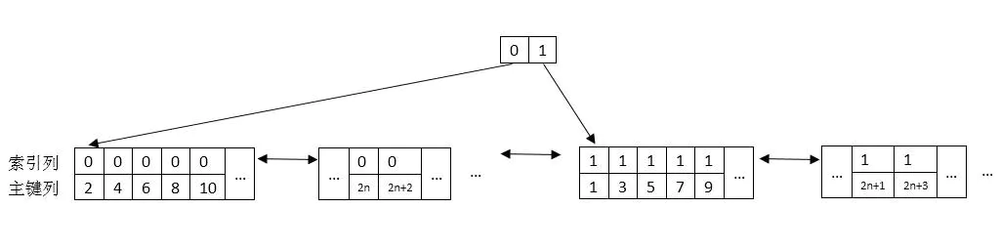
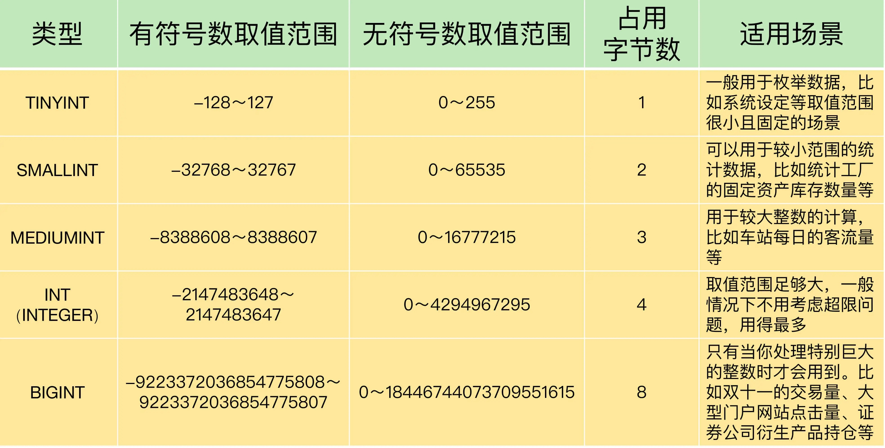

other1
01 数据存储过程¶
- 创建表的时候,不要在最后一个字段加逗号
- 在mysql里,空值不等于空字符串.一个空字符串的长度为0,一个空值的长度为空,并且空值是占空间的.
- 表名、字段名用英文,用汉字的话在遇到编码问题容易出错.
- 建议每次插入数据时的sql语句的字段名都写,这样不容易出错.
select count(*) from t;
-- id主键索引 sex索引 查看explain执行计划用了sex索引 why？
-- sex只有2个可能的值,男和女 区分度低 辅助索引的树的高度按照理论应该更高 像一根棍 只有可能是辅助索引叶子节点存储的sex-id相比于主键索引的id-value能更多,
-- 这里的sql语句是计算行数,综合下来弥补了数高度的问题..
sex列普通索引 0 1 指代 性别男女

02 字段类型定义¶
- 字段类型的定义,数据一定不要超过取值范围,在此前提下再考虑空间问题.
eg: 超市的商品表的itemnumber商品编号用的int而不是smallint,因为每天商品的上架下架,日积月累,商品数据极有可能超过smallint类型的65535.

- 浮点型的数据 float 4字节 和double 8字节 不精准; DECIMAL 精准.
eg: 超市信息系统 就推荐用DECIMAL 涉及金钱计算 分毫不差..
- 定义一个
double price0.47 + 0.44 + 0.19 = 1.09999999... - why？float和double是采用二进制的形式存储的. 比如9.624就无法用二进制数精确表达,就会取近似值.
-
DECIMAL 会把小数和整数部分拆开 分别转换为十六进制存储.
-
文本类型 字符串：char varchar text enum set
-
text 不需要知道文本的长度 但mysql不允许其作为主键
-
时间类型：datetime 与 TIMESTAMP
03 创建和修改表¶
- 约束: 非空、唯一性、自增 、默认值....
-
AUTO_INCREMENT自增字段会在最大值的基础上加1
-
复制表 创建一个相同结构的空表
CREATE TABLE demo.importheadhist LIKE demo.importhead;
04 操作表记录¶
- 插入查询结果
门店每天的销售流水都很多，日积月累，流水表变得越来越大。如果就让它这么不断地增长，数据量甚至会达到数亿条，占据的存储空间达到几十个 G。虽然 MySQL 可以处理这样比较大的数据表，但是每次操作的响应时间就会延长，这会导致系统的整体效率下降。可以开发了一个日结处理，当天算清所有账目。
举个例子, 在超市信息系统的 MySQL 数据库中, 历史流水表设计与流水表非常类似. 不同的是, 历史流水表增加了一些字段来标识历史流水的状态, 比如日结时间字段, 是用来记录日结操作是什么时候进行的.
-
不要随便修改主键字段的值
-
ON DUPLICATE KEY UPDATE的使用
如果我们把查询的结果插入到表中时,导致主键约束或者唯一性约束被破坏了,就可以用“ON DUPLICATE”关键字进行处理. 它告诉 MySQL,如果遇到重复的数据,该如何处理。
参考链接: https://www.jianshu.com/p/6ecda3af29c9
/*将门店A和门店B进行连锁
假设我们要把门店B的商品数据,插入到门店A的商品表中去,
如果有重复的商品编号itemnumber(是主键id),
就用门店B的条码barcode替换门店A的条码;用门店B的商品名称goodsname替换门店A的商品名称
如果没有重复的编号，
就直接把门店B的商品数据插入到门店A的商品表中
*/
INSERT INTO demo.goodsmaster
SELECT *
FROM demo.goodsmaster1 as a
ON DUPLICATE KEY UPDATE barcode = a.barcode,goodsname=a.goodsname;
- 删除记录后再插入记录,会出现主键字段值不连续的情况..
解决办法: 可以通过显式指定主键值的办法插入数据，而不是省略主键值让它自增
05 如何正确设置主键¶
思路一: 业务字段做主键
思路二: 使用自增字段做主键
思路三: 手动赋值字段做主键
(´▽｀) 详见05.md
06 做关联查询¶
-
外键就是 从表 中用来引用 主表 中数据的那个公共字段
-
MySQL 系统会根据外键约束的定义, 监控对主表中数据的删除操作。如果发现要删除的主表记录, 正在被从表中某条记录的外键字段所引用, MySQL 就会提示错误, 从而确保了关联数据不会缺失.
(实则上就是保证外键字段值 是外键关联的另一张表的字段 所拥有的值) -
可以通过 SQL 语句来查看外键约束的相关信息, 这里需要用到 MySQL 自带的、用于存储系统信息的数据库：information_schema。
mysql> SELECT
-> constraint_name, -- 表示外键约束名称
-> table_name, -- 表示外键约束所属数据表的名称
-> column_name, -- 表示外键约束的字段名称
-> referenced_table_name, -- 表示外键约束所参照的数据表名称
-> referenced_column_name -- 表示外键约束所参照的字段名称
-> FROM
-> information_schema.KEY_COLUMN_USAGE
-> WHERE
-- 可以通过show create table table_name;语句查看外键约束名称
-> constraint_name = 'fk_importdetails_importhead'; -- 外键约束名称
- 可以不用外键约束,但要想办法 通过应用层面的附加逻辑 ,来实现外键约束的功能,确保数据的一致性!!!! (大并发的场景,外键约束带来的资源消耗会让系统吃不消.)
07 where与having¶
-
mysql优化器在制定查询计划的时候, 会对查询进行优化, 比如重写查询语句, 目的是提高查询的速度效率, 不会机械按照固定的顺序执行
所以sql优化器可能会导致 真实情况是先where缩小范围再inner join连表 -
```sql select ... from a inner join b on ... inner join c on ... GROUP BY a.transdate , operatorname -- 按照日期、收银员分组 HAVING a.transdate IN ('2020-12-10' , '2020-12-11') AND SUM(b.salesvalue) > 100;
-- 可以将时间的筛选用where语句实现
select .... WHERE a.transdate in ('2020-12-12','2020-12-11') -- 先按日期筛选 GROUP BY a.transdate , operatorname HAVING SUM(b.salesvalue)>100; -- 后按金额筛选 ```
08 聚合函数¶
- count(*) | count(1) : 统计一共有多少条记录; count(字段): 统计有多少个不为空的字段值
若字段是主键 count(字段最快) ; count(1) 比count(*) 稍微高效一点.. - LEFT(str, n): 表示返回字符串 str 最左边的 n 个字符
搭配使用 --- GROUP BY LEFT(a.transdate,10) ORDER BY LEFT(a.transdate,10)
要知道LEFT(transdate,10)返回的结果是销售时间按照格式YYYY-MM-DD的值, 是按照这个值进行的分组
09 日志¶
通用查询日志
通用查询日志记录了所有用户的连接开始时间和截止时间 以及发给 MySQL 数据库服务器的所有 SQL 指令。
慢查询日志
慢查询日志用来记录执行时间超过指定时长的查询
它的主要作用是，帮助我们发现那些执行时间特别长的 SQL 查询, 并且有针对性地进行优化, 从而提高系统的整体效率.
错误日志
错误日志记录了 MySQL 服务器启动、停止运行的时间，以及系统启动、运行和停止过程中的诊断信息, 包括错误、警告和提示等. 错误日志默认是开启的.
二进制日志
主要用于主从服务器之间的数据同步, 以及服务器遇到故障时数据的无损失恢复
中继日志
就是主从服务器架构中, 从服务器用来存放主服务器二进制日志内容的一个中间文件. 从服务器通过读取中继日志的内容, 来同步主服务器上的操作.
回滚日志
用来存储事务中数据更新前的状态, 以便回滚和保持其他事务的数据一致性.
有了它, 我们就可以通过数据库的全量备份和二进制日志中保存的增量信息, 完成数据库的无损失恢复.
重做日志
是为了确保数值持久性、防止数据更新丢失的一种日志.
10 数据的备份¶
数据备份的工具 mysqldump, 以及用命令行客户端工具“mysql”和 SQL 语句“SOURCE”进行数据恢复的方法.用于导出数据表中数据的语句“SELECT … INTO OUTFILE”和导入的语句“LOAD DATA”。这些都是在备份数据时必不可少的, 对确保数据的安全性至关重要。
“LOAD DATA”是很好用的工具, 因为它的数据导入速度是非常惊人的. 一个 400 万条数据的文件, 用“LOAD DATA”语句, 只需要几分钟就可以完成, 而其他的方法, 比如使用 Workbench 来导入数据, 就需要花费好几个小时.
Ps: 设计表, 业务优先, 三大范式等.(´▽｀)